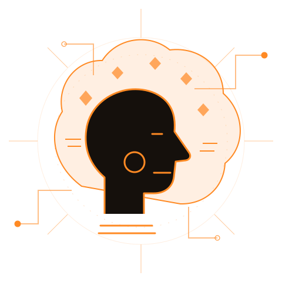

01
Da ideia ao primeiro build
No vibe coding, você descreve o que imagina e usa a IA como parceira para experimentar e construir soluções.
CRIATIVIDADE + IAEdição especial • Consciência Negra
Codifique na sintonia da transformação.
Celebre a ancestralidade. Quebre barreiras.
Use a inteligência artificial para construir novos futuros.
// SOBRE O EVENTO
A tecnologia transforma o mundo.
Mas quem transforma a tecnologia?
O Vibe Hack Black nasce como uma homenagem à Consciência Negra e um convite para imaginar outros futuros. Um espaço para valorizar talentos negros, conectar histórias e transformar ideias em soluções.
Inspirada no espírito das edições anteriores, esta proposta une vibe coding, criatividade e colaboração. Porque pertencer também é poder criar.
Sua ideia tem lugar aqui ↗
< ancestralidade encontra o futuro />// AFROFUTUROS POSSÍVEIS
Celebrar a Consciência Negra é reconhecer a cultura, os conhecimentos e as contribuições de pessoas negras — e abrir espaço para que sejam protagonistas dos próximos capítulos.
Aqui, ancestralidade e inovação se encontram. A tecnologia é uma ferramenta para amplificar vozes, preservar memórias e imaginar futuros a partir das nossas próprias perspectivas.
// CRIATIVIDADE + TECNOLOGIA
Uma ideia na cabeça. Uma comunidade ao lado.
Inteligência artificial para ir além.
No vibe coding, você descreve o que imagina e usa a IA como parceira para experimentar e construir soluções.
CRIATIVIDADE + IADiferentes histórias e habilidades se encontram. Compartilhe o que sabe, descubra novas perspectivas e crie junto.
TROCA + PERTENCIMENTOImagine respostas para desafios reais e caminhos para uma sociedade com mais equidade, representatividade e oportunidades.
IDEIAS + IMPACTOSua curiosidade é um ótimo ponto de partida.
Está começando? Conheça o vibe coding e descubra novas formas de criar com tecnologia.
// CONHEÇA AS OUTRAS EDIÇÕES
O Vibe Hack conecta pessoas e ideias.
Cada edição, uma nova perspectiva.
O encontro entre criatividade e vibe coding no CIn-UFPE.
Uma conexão internacional pela tecnologia para o bem comum.
Mulheres e iniciantes ocupando novos espaços na tecnologia.
Orgulho, diversidade e pertencimento para construir em comunidade.
// INSCRIÇÕES
Estamos preparando essa conexão. Em breve, informações
sobre inscrições, programação e participação.
É uma forma de criar software com apoio de inteligência artificial. Você descreve sua ideia em linguagem natural, experimenta as sugestões da IA e revisa o resultado para desenvolver uma solução.
As edições anteriores do Vibe Hack acolheram diferentes níveis de experiência. A proposta Black mantém essa inspiração: valorizar curiosidade, criatividade e colaboração. Os critérios de participação serão divulgados com o regulamento desta edição.
A proposta celebra a Consciência Negra e coloca o protagonismo negro no centro da criação tecnológica. O público elegível e as regras de formação de equipes serão informados pela organização.
A data, o local e o formato da edição Black ainda serão anunciados. A homenagem à Consciência Negra não representa uma confirmação da data do evento.
As inscrições ainda não estão disponíveis nesta página. O link oficial e os prazos serão publicados quando forem confirmados pela organização.
Entre em contato pelo e-mail vibehack@cin.ufpe.br para conversar sobre possibilidades de apoio e colaboração.